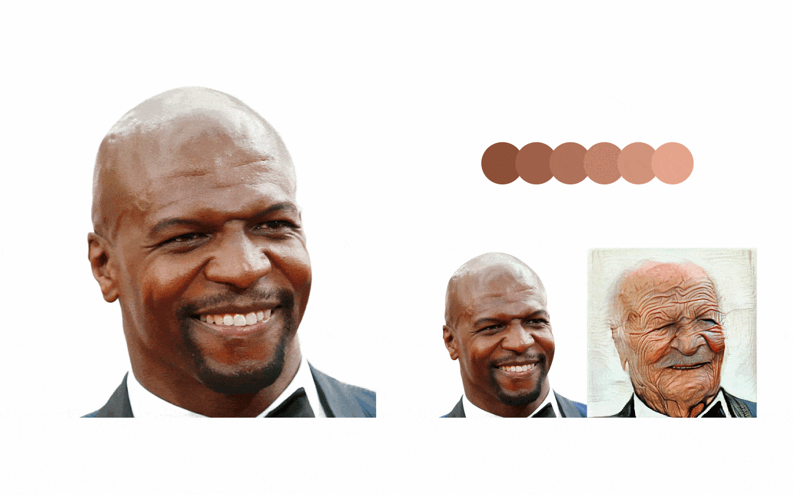
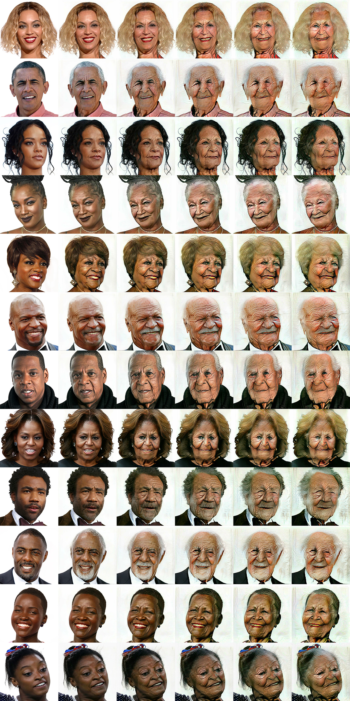
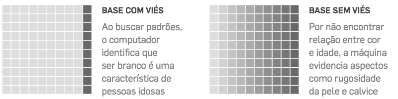

A visual composition showcasing black actor Terry Crews as an
animation: from his original photo, then to the result of the
first image filter, then to the second, and so on. The result is a
looped animation in which his face gets more white after each
filter (and also extremely distorted by excessive wrinkles).
Besides Making You Old, FaceApp Makes Black People Look White
Context
FaceApp, the Russian mobile application that became famous on the
internet for creating an “elderly version” of yourself, saw its
immense popularity turn into a pile of privacy questions.
There were questions about what data is collected and shared, and
fears about a company having a facial database of 150 million people
worldwide.
But the company’s questionable practices may stretch beyond that
point.
Experiments
What happens when you apply a filter again and again on the same
photo? This is my curiosity speaking. First, I tried applying the male
filter on my picture just to see some exaggerated features. I ended up
looking like a caveman.
Now it was time to try filters on other people. Who better than
People’s sexiest man alive
choice of 2018? Thanks to Mariana Cunha for the tip ;)
After a few iterations of the aging filter, I have turned Idris Elba
into a bizarre-looking Santa Claus.
This is when it hit me. I have just
reverse engineered FaceApp’s machine learning
process. Well, kind of.
At that point I got my team together to discuss ideas for the story
and to design controlled experiments.
Result
Our experiment applied the aging filter 5× on the same images.
Despite the obvious distortions caused by artificial aging, all faces
were whitened.
This indicates a racially biased database may have
been used to train the machine learning system that powers the app.
200k +Views
5×Filter
For this project, a dozen pictures of black personalities were used —
such as Terry Crews, Barack Obama, rapper Jay-Z, singer Iza and
actress Lupita Nyong’o.

Here are some of the most evident outcomes:
Terry Crews, ActorIza, SingerJay-Z, RapperViola Davis, ActressBarack Obama, Politician
There is a human bias in collecting the data that was used to train
the machine. I believe FaceApp had more images of white people than
black people.
André de Carvalho, Professor at the Institute of Mathematical and Computer Sciences
at USP São Carlos

The simplified diagrams above were published on the original
article. They represent 2 image datasets used to train a machine.
The first one is biased. Lighter or darker shades of each square
represent the skin tone of the person portrayed in each photograph.
On a biased dataset, when searching for patterns, the
computer identifies that being white is a characteristic of older
people.
If the training data is unbiased, the neural network
doesn’t find any relationship between color and age. Thus, the machine
highlights aspects such as skin roughness and baldness.
This kind of “algorithmic racism” on a popular app is just the tip of
the iceberg of an issue that society will face in the coming years.
According to specialist Tarcízio Silva, facial recognition, credit
scoring systems, job candidate analysis or criminal risk scores are
also developed and deployed without much thought into their potential
racial consequences.
One of the ideas for avoiding biased algorithms lies behind the
principle represented by FAT – an acronym for
Fairness, Accountability and Transparency.
That is, algorithms should treat everyone equally and companies should
be responsible and transparent. The principle is discussed worldwide
by experts in the field.